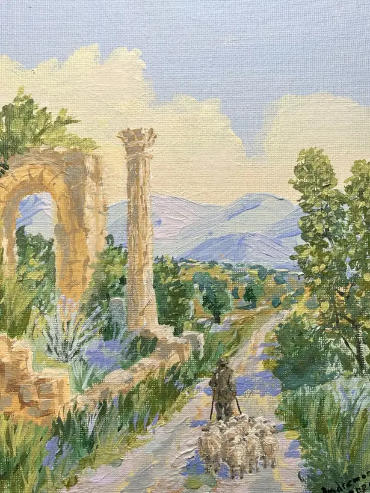
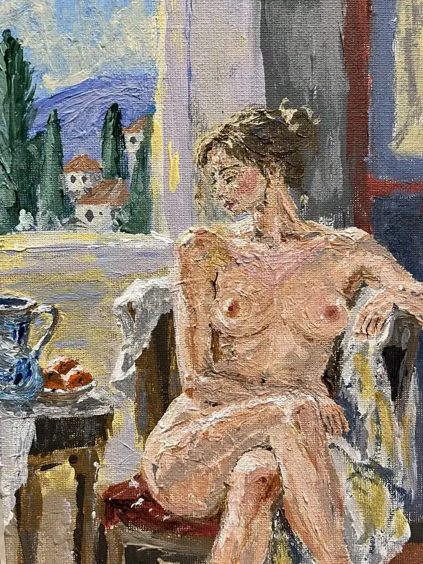
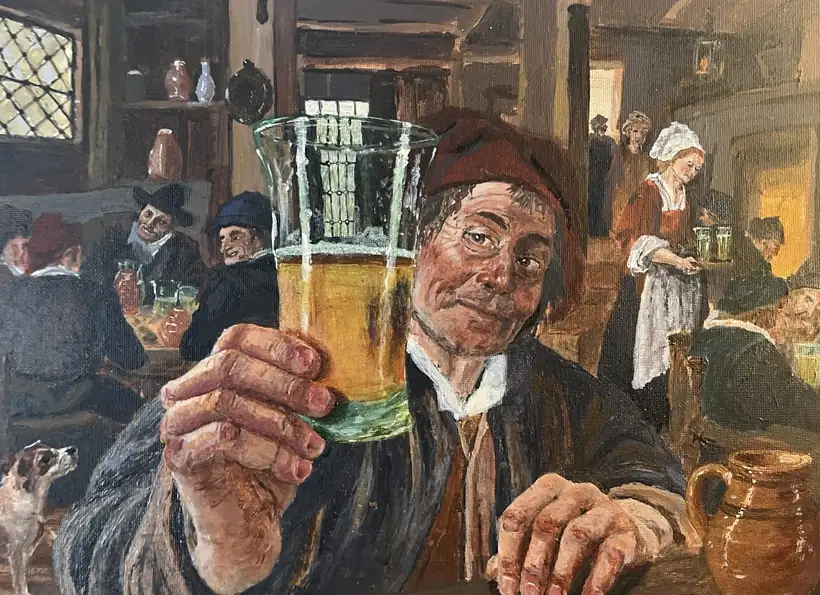
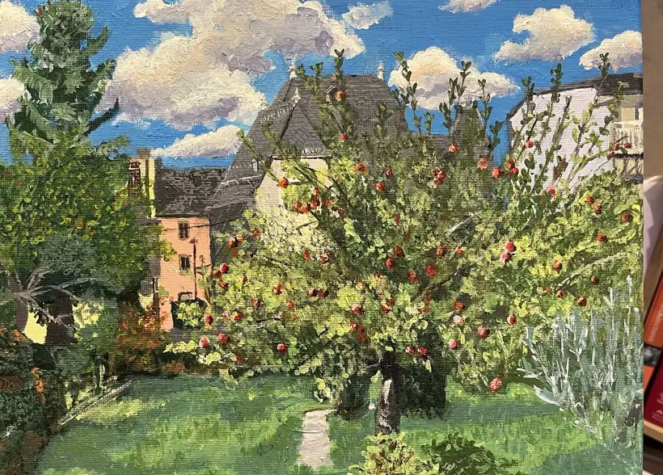

04 / PAINTINGS
Paintings.
A selection of my acrylic paintings: landscapes, still life and figurative studies.
THE PAINTING GALLERY
Acrylic painting gallery.
Seven photographed works selected from my acrylic paintings. Click any image to view it larger.

Steam Locomotive
Technique: AcrylicSize: To be confirmedSurface: Canvas

Castle Study
Technique: AcrylicSize: To be confirmedSurface: Canvas


Shepherd's Path
Technique: AcrylicSize: To be confirmedSurface: Canvas


Seated Figure
Technique: AcrylicSize: To be confirmedSurface: Canvas

Still Life with Jug and Pear
Technique: AcrylicSize: To be confirmedSurface: Canvas


Tavern Toast
Technique: AcrylicSize: To be confirmedSurface: Canvas


Orchard in Summer
Technique: AcrylicSize: To be confirmedSurface: Canvas
Original acrylic paintings on canvas. Sizes are not currently documented and will be added once confirmed.
HOW THE GALLERY WILL WORK
A different kind of work.
Painting gives me another way to build and to observe: slower, more tactile, and less abstract than software.
ABOUT THE WORK
Learning by doing.
Painting is a different discipline from software engineering, but both reward curiosity, careful observation and persistence.
The photographs document actual canvases. Physical dimensions have not yet been recorded for this catalogue; those labels will be updated when measured.
MORE TO EXPLORE